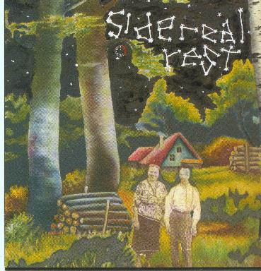

sidereal rest

title: sidereal rest
latin: none
Paste - Please, No Music Tonight
US Saucer - Stowing Dung
Thee Crusaders - Unmoveable
Melcher - Ladies, I Am Bad News
Extra Glenns - Sure
Roughage - Vacas
Mark - The Chauffer
Blaise Pascal - Straight is the Gate
Good Horsey - Can of Worms
Refrigerator - Save
B.C. Scar - Waterskiing
Loren Mazzacane - Hours
Sun City Girls - Kasper Hauser
Kathleen Yearwood - Excerpt from Opponent
Bugskull - Lost and Found
Pork Queen - Without Your Withsides
Caroliner Rainbow Splinter Mine Deserves - Epic of the Well Meaning and the Thick
Staked Plain - Blind Dog Found
Thinking Fellers Union - Electric Chair
Noggin - Mucho Gratitdo Ukelele Mi Amigo
Payment - Fountain Scissors
please mail any questions/comments/complaints, or just notes hello to:nall@themountaingoats.net